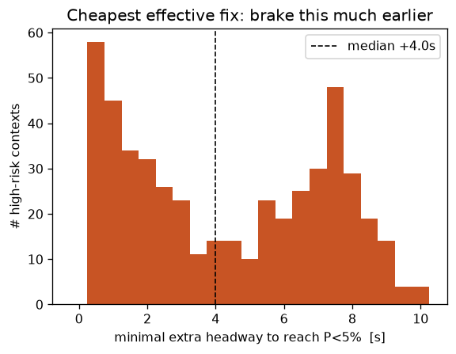
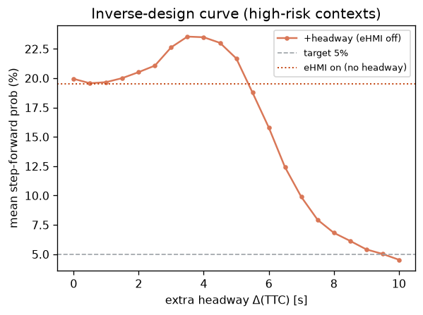

刃⑥ 一番“安い直し方”を逆算する（最小介入の逆設計）
危険場面で飛び出し確率を5%未満にする最小の介入を逆算し、効くノブ（余裕 vs 合図）を見分ける
36.7%要改修の割合
+4.0s必要な追加余裕(中央値)
87.6%余裕で解ける割合
+7.4ppeHMIの効果ΔP
1. このデータは何か
刃①のeHMIフローを流用。held-outの危険文脈（接近中 appr>0 かつ TTC<6s）1500件が対象。目標は前方ステップ確率を P<5% に抑えること。うち実際に閾値を超える『要改修』は 36.7%。
2. 何を・どう学習したか
制御ノブを2つ比較：(a)連続＝車の余裕TTC（早めのブレーキ／車間）を増やす、(b)離散＝eHMI合図。フローを通して P(step) を掃引し、各場面で閾値を割る最小のΔTTCを逆算。作用点の数値感度 dP/dTTC も算出。
3. 結果
要改修文脈のうち 87.6% は 中央値 +4.0s の余裕で5%未満に落とせる。合図は逆効果（平均 +7.4pp）で使えず、＝逆設計は『交差点を作り直せ』ではなく『早めのブレーキが効くノブ、合図は当てにならない』という最小改修と“効くノブ”をデータから名指しする。

各高リスク場面で必要な最小の追加余裕Δ(TTC)の分布

逆設計曲線：余裕を増やすと確率が目標を割る点＝最小の直し方（点線=合図のみ）
4. 図の見方
左＝各高リスク場面で必要な最小の追加余裕Δ(TTC)の分布。右に長い＝直しにくい。右＝逆設計曲線。余裕(橙)を増やすと確率が目標線を割る点＝最小の直し方。点線＝合図ONにしただけの水準（下がらなければ合図は無力）。
5. 解釈と意味・使い道
尤度モデルを通した処方（prescription）。予測で終わらず「どのノブに最小コストで手を入れるか」を出せるのが微分可能NFの強み。実道路レイアウトの一般化は INTERACTION / inD で追試（刃④と共有）。
条件付き Normalizing Flow（zuko NSF）で自動生成。
NF×生活データ探索シリーズの一部。